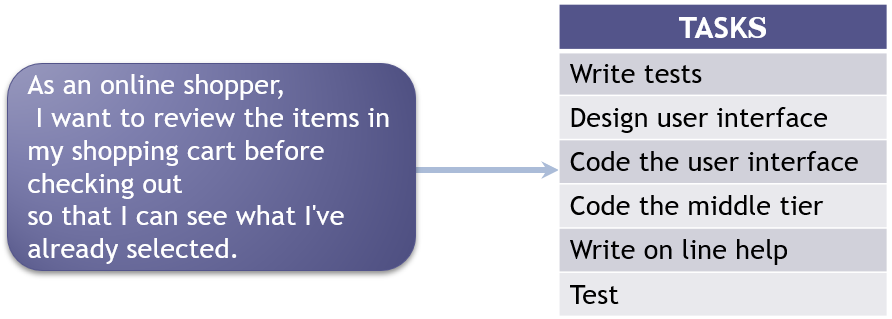
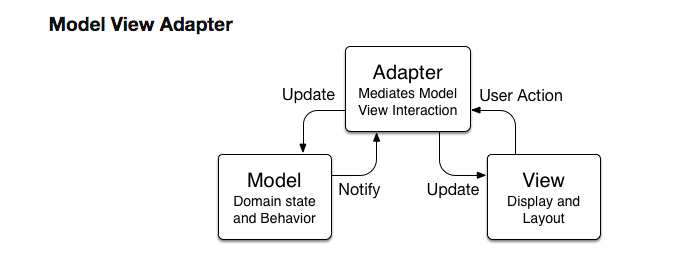
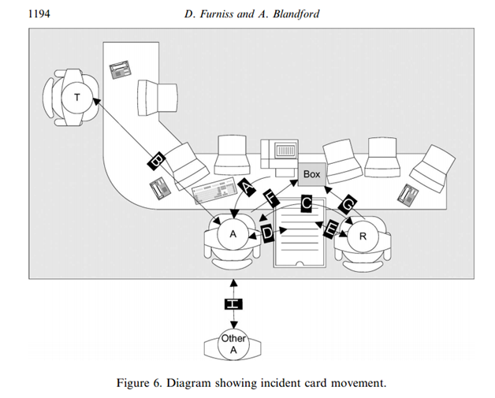

Software Engineering Group Project
Matthew Barnes
Envisioning 2
Stakeholders and Personas 2
User Stories, Planning, Risk 3
User stories 3
Agile planning 4
Risk Assessment 6
Planning 7
User story estimation 8
T-shirt sizes 8
Story Points 8
Agile Planning poker 8
User story breakdown into tasks 12
Introduction to Source Control 12
Advanced Git 14
Starting to Build: Scenarios, Storyboards 15
Storyboards (static design) 15
Scenarios (dynamic design) 16
Building Applications using MVC 17
What problem does it address? 17
What is it? 18
How to implement it? 19
Where is it used / Alternatives? 20
Software Testing 24
Development testing 25
Acceptance testing 26
Teamworking 27
Other Agile Techniques 30
Agile Manifesto 30
SCRUM 31
XP 32
FDD 34
ASD 34
Kan Ban 34
Crystal methods 35
DSDM 36
Shu-Ha-Ri 37
Beyond HCI - Designing for Delight 38
TL;DR 39
Envisioning 40
Introduction to Source Control 40
Starting to Build: Scenarios, Storyboards 40
Building Applications with MVC 40
Software Testing 40
Teamworking 40
Other Agile Techniques 40
Beyond HCI - Designing for Delight 40
Envisioning
Stakeholders and Personas
-
Primary stakeholders: The people who actually use your system directly
-
Secondary stakeholders: People who do not directly use your system, but they
provide input or receive output
-
Tertiary stakeholders: People who are affected by your system, but do not
interact with it
-
Facilitating: People who develop, design and maintain the system
-
For example, for the ECS hand-in system:
-
Lecturers and students are primary because they directly use the hand-in system to
either set work or hand in work.
-
The assessment team could be secondary because they are aware when the work is late in the
hand-in system. They don’t directly interact with the
system, but they know its results.
-
The Assistant Dean for Education could be tertiary because they are notified when a student is
repeatedly handing in work late, or not at all. They might
not even know that the system exists, but they are affected
by the hand-in system on a higher level.
-
Persona: a stereotype of a group of users in some detail, like
background, job, situation etc.
-
You should describe:
-
their background,
-
job function,
-
situation in the organisation,
-
objectives, beliefs, anxieties and so on,
-
You can also include a representative image
-
Scenario: how a persona interacts with the system
-
Users are more personal
-
Multiple personas can represent the same user, so you can
build more vast systems (it’s not too general)
-
Incorporate personas into stories (As a [persona] I want to [goal] so that [benefit])
User Stories, Planning, Risk
User stories
-
What is a user story?
-
A user story is one or more sentences that captures what the user wants
to achieve.
-
It’s written in normal language; no jargon!
-
It should detail one thing. If the user story gets big, you
should split it up into multiple user stories.
-
There are three steps to creating a user story:
-
Card: write the story on card, annotate it with notes
etc.
-
Conversation: talk to the product owner and get more details
-
Confirmation: test if the story was coded correctly. If not, start
again
-
User stories usually fall into the following
template:
-
As a <user>
-
I want <goal>
-
So that <benefit>
-
So for example, a user story could go like:
-
As a wild swimmer
-
I want to know the water quality of the sea where I am going on
holiday
-
So that I don’t catch horrible diseases
-
You can also refine your user stories by being a little
more specific, for example instead of the quality of the
“sea”, you could have “rivers” or
“lakes”.
-
How do you write good user stories?
-
You INVEST! (You don’t actually invest, it’s an
acronym)
-
Independent: your user story should achieve one goal
-
Negotiable: you can talk to your product owner about this
-
Valuable: is this user story actually any good to you?
-
Estimable: can you estimate the size of this user story?
-
Small: if it’s too complicated, it can probably be split
into smaller user stories
-
Testable: you can get your product owner to perform this user
story
-
User stories and use cases are not the same!
-
User stories are general and informal. You talk to your
product owner about them.
-
Use cases are structured, well-documented and verbose. You
use them for testing and development.
Agile planning
-
Before, companies used to use the waterfall model for
development.
-
It’s systematic, sequential, and highly structured,
but there was no room for flexibility. You can’t go up
the waterfall (except if you’re a sicyopterus
stimpsoni, which you’re not)!
-
Requirements change, and problems happen. Basically,
waterfall development (or any linear plan) sucks.
-
You know what doesn’t suck? Agile development!
-
Agile development is an umbrella term for frameworks and practices that emphasises responses to change, typically
through requirements and solutions.
-
Instead of doing everything at once (like the waterfall
method does), agile methods like Scrum or Kanban do a little
of everything all the time.
-
Scrum is a framework where tasks are created from user stories,
which are then added to a product backlog and implemented
through sprints.
-
After each sprint, a scrum meeting occurs where everyone
states what they’ve done and checks the
burndown.
-
Typically, after each sprint, a deliverable is available
for the product owner to test.
-
More specifically, there are two steps to scrum:
-
Envision your project
-
Develop iteration
-
When you envision your project, you create a product
backlog.
-
A product backlog is the requirements for a system, and it is expressed
as a prioritised list of
requirements:
-
functional requirements (things you can do, like buying
something)
-
non-functional requirements (things you can’t do,
like how something looks)
-
technical team-generated requirements (like
refactoring)
-
It is up to the product owner to prioritise the product
backlog.
-
So how do you make a product backlog?
-
First, you come up with as many tasks as you can, based on
the user stories.
-
There will be more than enough for one sprint.
-
Then, more tasks can be added later on when more is learned
about the product and its customers.
-
During a sprint planning meeting, backlog items are moved
into sprints, where they might or might not be implemented
into the system during that sprint.
-
You also need to identify the lower level tasks and
estimate how long each task will take.
-
Now we have what we want to do in our sprint. What do we do
first?
-
We categorise the tasks into:
-
What must be done
-
What should be done
-
What could be done
-
What would be nice, but won’t have time for
-
This is known as MoSCoW prioritisation.
-
Then, you set up a burndown chart, organise who will be
doing what and each week, you need to check the sprint plan
and adjust it (remember, scrum is all about responding to
change).
-
How will you plan your sprints?
-
Do all of the musts as early as possible?
-
Balance out stories/tasks to make a really good
deliverable?
-
You also need to focus on dependencies, for example you can’t implement a chat service
before implementing any users to chat with, so implementing
users might be in sprint 1 and implementing a chat service
might be in sprint 2.
-
A burndown chart is a visual representation of tasks being completed. It
allows you to estimate when all the tasks will be finished,
and whether the group is going slow or fast.
-
How will you know how you’re doing?
-
You organise scrum meetings!
-
A scrum meeting (or scrum, on its own) is a 10-15 minute meeting where each member
of the group states:
-
what they’ve done
-
what they’re going to do
-
what they need help on
-
The scrum master will keep the meeting on track and notes
progress
-
During a scrum, the burndown will also be checked, and the
backlog might be updated.
-
Lots of things may be considered, like:
-
will we achieve the deadline?
-
do we need to change what we will deliver?
-
When a sprint is over, we evaluate:
- how we did
-
the feedback from the customer
-
what to change in response to that feedback
Risk Assessment
-
There are multiple different risks that can happen:
-
you lose a member of staff
-
the management changes and priorities are now
different
-
requirements are now different, and it’s larger than
planned
-
specification delays, and now it’s not available on
time
-
everyone underestimates the size of the project
-
technology changes
-
someone else releases a competitive product
-
a component of the product fails
-
the organisation is taken over
-
Oh no! There’s so much that can go wrong! What will
we do?
- We can:
-
Identify the risks
-
Quantify the risks
-
severity of impact * probability of occurrence
-
Show stopper: a high probability risk that could ruin everything
-
Identify alternate strategies
-
Pick strategies that will minimise the risks and tackle
show stoppers early
-
Here’s an example of risk analysis:
|
Risk
|
Probability
1 low, 10 high
|
Severity
1 low, 10 high
|
Risk exposure
E = P * S
|
Mitigation
what you’re going to do about it
|
|
Nobody talks to anyone because we’re all
awkward and don’t know each other
|
6
|
5
|
30
Huge risk!
(Show stopper)
|
Host events to engage people together, so that
we get to know each other more
|
|
A rat infiltrates the GitHub server room,
nibbles the cabling and destroys all of the
repositories, including ours
|
3
|
8
|
24
Big risk
|
We will back up our project onto multiple
platforms, so even if GitHub explodes, our code
will be safe
|
|
A meteorite crashes onto the office building
and kills everyone
|
1
|
10
|
10
Small risk
|
It probably won’t happen, but our code
and documentation are stored on the cloud anyway
so if anyone survives they can recover it.
|
|
An evil man earns the respect of the boss, so
our boss hires his blonde-haired teen son from
the 1800s only for him to knee our dogs in the
face and wear a stone mask to become a
vampire
|
0
|
9
|
0
Not even a risk
|
Nobody even gets these references
|
Planning
-
We should only plan for the next immediate sprint
-
We can plan for the next sprints a little bit, but leave
plenty of room for change.
-
The amount of planning should decrease the further away the
sprint is.
-
So we have our backlog, what do we put in our next
increment?
-
Prioritise musts? Balance out musts, shoulds and
coulds?
-
Talk to your product owner. Remember: the customer is
always right!
-
Think about how many tasks you can complete this sprint,
and plan accordingly.
-
Make sure you plan to have a deliverable that offers
value.
-
RISK: If you have musts in the last increment, and you run out
of time, you’ll have to sacrifice important parts of
your system!
-
You also need deliverables that offer value, and a
sustainable workload. There may also be dependencies (you
can’t implement A without B).
User story estimation
-
How do you estimate how long user stories will take to
complete?
-
There are various ways to do it:
T-shirt sizes
-
The following T-shirt sizes:
-
Small
-
Medium
-
Large
-
Xtra-Large
-
... can be used to label how long tasks will take.
-
You’re not going to guess it perfectly the first
time.
-
You’re going to make mistakes. You’re only
human!
-
But, as humans, we can learn from our mistakes and move
on.
-
Therefore, label tasks the best you can. For example, you
may label task #1 a Medium.
-
If, after the sprint, you find out that task #1 was
actually a Large, you can document that and learn from that.
-
By keeping up this self-improvement program, you can
eventually get good at estimating task durations!
Story Points
-
Story Points are natural numbers that also state how long a
task may take.
-
The higher the number, the harder the task.
-
There are various ranges of story points, such as:
-
Square numbers: 1, 2, 4, 8, 16 ...
-
XS Small, Small, Medium, Large, XL Large (encoding T-shirt sizes to story points, which is useful if
your scrum software is only compatible with story
points)
-
Fibonacci series: 1, 2, 3, 5, 8 ...
Agile Planning poker
-
Agile Planning poker is a gamified estimating technique to estimate relative
sizes of development goals.
-
How do you play agile poker?
-
First of all, if you’ve played normal poker,
it’s nothing like that.
-
There are three roles:
-
The moderator - The one who distributes the user stories to the team and
records estimates
-
The Product Owner - The one who answers questions about the user stories
-
The participants - The ones who decide and debates over estimation of user
stories
-
Each participant gets a deck of estimation cards. These
cards could be T-shirt sizes, square numbers, fibonacci
etc.
-
The moderator picks a user story and shows it to the
team.
-
The Product Owner answers any questions regarding the user
story.
-
Each participant picks an estimation card they think is
right for the user story. They hold it face-down.
-
When everyone is ready, they all show their estimation
cards.
-
If there is an agreement over an estimation, the moderator
records that estimation for that user story and we go back
to step 2 with a different user story until all user stories
are estimated.
-
If there is a disagreement, the high and low estimators
debate and defend their estimates. Afterwards, everyone
picks estimates again (go back to step 4).
-
Let’s see an example of people playing it!
|
Illustration
|
Explanation
|
|

|
Everyone is assigned T-shirt sized cards.
This game, the moderator will also play as the
Product Owner.
We are all ready to play!
|
|

|
The first user story has been presented!
Everyone is picking their estimates...
|
|

|
It seems everyone picked the same thing. There
is an agreement!
The moderator will document this estimate with
this user story and move on.
|
|

|
The second user story has been presented!
Everyone is picking their estimates...
|
|

|
Whoa! There’s some discord over the
estimation. They’ve started
“debating” over which is the better
estimate!
|
|
|
Everyone is picking estimations again...
|
|

|
It seems everyone has come to an agreement, so
now the moderator will document this estimate
with this user story and move on.
This will continue until every user story has
been estimated upon.
|
User story breakdown into tasks
-
You should break your user stories down into tasks that are
easy to read, understand and complete as a programmer.
-
The tasks should be structured such that when all tasks are
complete, the user story is accomplished.
- Example:

-
This will also help you distinguish between user stories
that are small and user stories that are big.
-
It’s also helpful to estimate times on tasks, as
they’re more atomic than user stories.
Introduction to Source Control
-
Source Control: the practice of tracking and managing changes to
code.
-
It’s like a system that can track changes to your
projects and allow you to see who made what changes, revert
back to previous stages in the repository etc.
-
There’s lots of source control systems, like Git and
SVN.
-
Use Git, though. It’s better. SVN is ancient.
-
Before we go over the commands, let’s see how Git
actually works:
-
First of all, Git models your project as a series of
“commits”.
-
A commit can be seen as one “change”. They add,
remove or modify files in the repo.
-
These commits happen in serial, making up your
project:
-
In terms of the “areas” of Git:
source: https://greenido.files.wordpress.com/2013/07/git-local-remote.png?w=696&h=570
-
First of all, you have your working directory. This is where you make all of your changes and do all of
your coding.
-
Second, you have a staging area. Changes in this state are “ready” to be
committed and confirmed as a change in the project.
-
A repository is an instance of Git that tracks your
changes, remembers all the previous commits, can revert
things back etc.
-
The local repository sits on your computer. The remote repository sits in some server somewhere, maybe GitHub. You can
update the remote repo with commits in your local repo, or
you can fetch new commits from the remote repo into your
local repo.
-
Git has several commands:
-
add - stages your changes (makes your changes ‘ready’
to be committed)
-
commit - take all your staged changes and puts them into one big
‘change’, called a commit, and puts it in the
local repo
-
push - updates a remote repo with commits in your local repo
-
checkout - updates your working directory to a commit in your local
repo. It could be an early commit or a later on.
-
pull - updates your working directory with the latest commits in
the remote repo. It’s basically calling fetch, then
checkout.
-
clone - makes a copy of a repository
-
To link a remote git repository to a local one, use the
“remote add” command.
-
There are lots of hosting services for Git, like GitHub,
Bitbucket and SourceKettle.
-
If you want to laugh at SourceKettle, do so here: https://sourcekettle.ecs.soton.ac.uk/
-
Use GitHub. It’s good. Bitbucket too.
-
What happens when two people make changes to the same
file?
-
Merge conflicts! Edit the file to get the changes that you
want.
Advanced Git
-
Git also has branches, so you can branch off, implement
some feature, and then merge that branch back into
“master” (the main branch).
-
As you can see, the branch veers off into another path and has their own
commits. Once the feature is fully implemented, the branch
is merged back into master.
-
Git also has a blame feature, which is used to blame people for shit code identify who made what change and why (what commit they did
it in).
-
Lastly, Git also has a stash feature. Stashing takes all of
your uncommitted changes and puts it into a
“stash”, which you can load later. It’s
used for when you want to move to a different branch and
want to work on something else, but you don’t want to
commit unfinished work.
-
If you want to use all these Git features effectively, but
you’re not the kind of person who likes learning
tonnes of terminal commands, I suggest GitKraken. It’s
a Git client with a very intuitive user interface that makes
working with Git incredibly easy!
-
https://www.gitkraken.com/
-
Believe me, I write these notes; I’m definitely the
kind of person who likes things laid out in a simple and
easy manner.
-
Do you find Electron absolutely disgusting and wish it was
never created? Don’t worry, there are plenty of other
GUI based Git clients, such as SourceTree and
SmartGit!
Starting to Build: Scenarios, Storyboards
Storyboards (static design)
-
Storyboards describe the functionality in a visual way.
-
They describe the basic view of the software from a
user’s perspective.
-
They can show:
- layout
- colours
- fonts
-
UI components (buttons, labels etc.)
-
It’s a static design because there’s no
interaction, it’s just showing the design and
explaining it.
-
We can use static design to describe dynamic design:
-
Interactions between the buttons, text boxes etc.
-
Starting and exiting the program.
-
The range of inputs that can be tolerated.
-
The range of outputs that will be allowed.
-
Details of any warning messages.
-
The details of the calculations.
Scenarios (dynamic design)
-
Scenarios are a sequence of interactions the user has with the
product in order to achieve some goal.
-
It’s a bit like a use case, except less formal and
descriptive.
- Example:
-
David opens a web browser and enters the URL of
PuffinShare
-
The home page is displayed
-
David can enter tags into the search box
-
When he presses the ’Go’ button, the
puffinShare repository is searched
-
Items matching the tags are retrieved and displayed in the
output box on the RHS
-
If there are no matches, a message is displayed in the
output box ‘no matches, please try again’
-
David can select one of the retrieved items and the
resource page is displayed
-
David can navigate to these pages by selecting their
tab:
-
Scenarios should be tested at each increment
-
However, the scenario may only be partially achievable
after an increment.
-
Therefore, you can split the scenarios up and put them into
the appropriate increments for which they can be
tested.
-
It’s also good to link the scenarios to
personas.
Building Applications using MVC
What problem does it address?
-
Do you remember Flappy Bird?
-
If you don’t, it’s time to move out of your rock apartment it was a very popular mobile game.
-
There were many clones (such as Flappy Knuckles, made by yours truly!)
-
If we were to implement it using an OOP language, the
structure may look something like this:
-
Yikes, that’s ugly! Who’d want to look at
that?
-
The problems with this is:
-
High coupling (every component is too tightly linked to
each other)
-
Low cohesion (the classes are too broad, they’re not
specific enough to their individual task)
-
No separation of concerns (everything is clumped
together)
-
These problems result in these complications:
-
Hard to understand
-
Hard to extend
-
Hard to re-use
- Hard to test
What is it?
- What is MVC?
-
MVC (Model-View-Controller) is a software architecture that aims to decouple the
data (model) and the visual presentation (view).
-
Basically, your software will look more like this:
-
Contains all the data (can be a database)
-
It’s usually a one-to-one mapping to real-world
objects and concepts
-
It responds to queries and operations on its state
-
It should be independent of both the controller and the
view
-
The link between model and view
-
Takes the user inputs from the view and updates the model
accordingly
-
Can also update the view when the model has changed
-
Graphically represents the state of the model to the
user
-
Can consist of sub-views
-
Typically passive: responds to model updates
-
Receives user input, but passes this onto controller
-
Clear separation of concerns
- Low coupling
-
Easy to maintain (especially view)
- Easy to test
-
Promotes re-use
-
Can support multiple views:
How to implement it?
-
Usually MVC goes a little something like this:
|
Model model = new Model();
View view = new View();
Controller controller = new Controller();
controller.setModel(model);
view.setController(controller);
|
-
The view may or may not have access to the model; it
depends on the implementation.
-
There are also different flavours of MVC, such as:
-
Model responds to state change operations, but controller
is responsible for notifying view.
-
Model responds to state change operations and notifies view
of change (using observer pattern).
-
Extension of active model; the controller fully handles the
link between model and view (similar to
model-view-presenter).
-
Now that we have these, can we implement Flappy Bird any
better?

-
Now there’s more structure and it’s actually
readable!
Where is it used / Alternatives?
-
MVC is used in a lot of places.
-
It’s central to Apple app development, and lots of
frameworks use it (source):
-
Zend Framework for PHP
-
Django for Python
-
Rails for Ruby
-
Merb for Ruby (for the experienced)
-
ASP.NET MVC for .NET
-
Seaside for Smalltalk
-
Catalyst for Perl
- AngularJS
-
Before I go into the types of variants, there is something
called multitier architecture, or three-tier
architecture.
-
Three-tier architecture refers to the use of multiple architecture patterns at each
layer of the system:
|
Presentation tier
The user interface.
Translates tasks and results into a format the
user can understand.
|

|
|
Logic tier
Moves and processes data between the two
layers.
Coordinates the application, processes
commands, makes logical decisions and
calculations.
|
|
Data tier
The database.
Where information is stored and retrieved by
the logic tier.
|
-
There are also a number of variants of MVC that differ
slightly:
-
MVA: Model-View-Adapter - very similar to iOS MVC, as it’s all linear
and the view and model are unaware of each other

-
MVP: Model-View-Presenter - similar to MVA, but the presenter handles the
rendering logic and the UI event handling logic. It’s
more suited for UIs and commonly used in the presentation
tier.
-
PAC: Presentation-Abstraction-Control - like MVC, but better suited for multi-tasking and
multi-viewing.
-
Abstraction => Model
-
Presentation => View
-
Control => Controller
-
There are structures called “agents”, which are
a triad of presentation, abstraction and control instances.
These agents all belong to different hierarchies, which all
communicate to each other through their control
instances.
-
It supports concurrency better as each third in the triad
can be their own thread, however it’s more complex to
build.
-
HMVC: Hierarchical MVC - pretty much the same as PAC
-
MVVM: Model View ViewModel - The view binds properties in the view model.
Simplifies event-driven programming. Used in React, Angular
and Vue.js.
-
Model-Delegate - the view and controller are bundled together into
one. Java Swing is like this.
-
Naked Objects - the user interface is entirely automatically
created from the definitions of the domain objects,
typically using reflection. One example of this is the Admin
Bundle from Sonata, which generates admin pages based on
your model classes:

-
Here are some design patterns you can use in MVC:
-
The object is updated when ‘notify’ is called.
Appropriate for either view or controller.
-
Multiple strategies can be used to achieve the same goal in different
ways.
-
Appropriate for controller to seamlessly change
behaviour.
-
Create tree structures.
-
Appropriate for views and sub-views.
Software Testing
-
Validation testing: Does the system work? (ties into user
stories)
-
Verification testing: Does the system do as it’s supposed to?
(finds incorrect behaviour)
-
Programming problems can cause a number of errors:
-
infinite loops
-
underflow, overflow
-
division by zero
- logic errors
-
segmentation faults
-
There are two kinds of testing:
-
Development testing: continuous testing that occurs during
implementation
-
Acceptance testing: check if the software is compliant with the
business requirements and if it’s suitable for
delivery
Development testing
-
These tests are run during implementation, and:
-
Usually done by same team as implementing
-
Tests for defects and validity
- Involves:
-
automated tests
-
code inspections
-
Automated testing can involve:
-
Unit tests - tests at class level.
-
Typically tests an individual class, and tests methods,
properties and states.
-
They have an input and an expected output, and it compares
the two. JUnit does unit tests.
-
Good tests should check for:
-
Validation - the system should work
-
Defect testing - the system copes with all possible
inputs
-
Partition testing can be performed, where inputs from all the
equivalence partitions are tested (e.g. with a method that
gets a classification, you could test inputs that get you a
1, 2-1, 2-2, 3, Fail and Invalid input).
-
Boundary testing can also be performed, where boundary inputs are
tested, for example the edges of a range of numbers (99.9
out of a range from 1 to 100).
-
Unit tests are black box tests, which means you only need
to know the system’s API to write them.
-
Unit tests are used in:
-
Regression testing - testing previous features again to make sure
newly added features doesn’t affect older ones
-
Continuous Integration - running test cases before a pull request, ensures
no bugs occur in master branch
-
Test driven development - where you create tests first, and you
implement the system based on those tests
-
Component tests - similar to unit testing, but it tests a whole
component of the system instead of just a unit. It’s
more coarse than unit testing, but it tests
‘units’ working in conjunction with each
other
-
System / Integration tests - the next one up from component tests, it
tests the components working together, sometimes the whole
system.
-
These tests can highlight problems caused by:
- usability
-
missing requirements
-
emergent behaviour
-
A lot of it can be manual (e.g. UI testing)
Acceptance testing
-
Acceptance testing relies on acceptance criteria, which are criteria for the software born from user
stories.
-
They’re only really done towards the end, to ensure
verification of the software.
- For example:

-
Could give the acceptance criteria:
-
students can log in to handin with ECS credentials
-
student can select COMP2211 work
-
on selection, there must be an option to submit a
file
-
must be possible to submit a .zip file
-
student is emailed receipt
-
work is stored in a database for marking
-
Acceptance testing fits into the equation as follows:
-
Acceptance testing also incorporates release testing, a form of black box testing done by a separate
team.
- It involves:
-
Requirements testing - testing by a requirements specification
-
Scenario testing - testing by scenarios / use cases
-
Performance testing - testing the performance with harsh inputs and low
system specs
-
Load testing - puts a heavy number of concurrent users
interacting with the system at the same time
-
Stress testing - tests the system under extreme loads. Can check
for memory leaks, slowness, security issues and data
corruption
-
Soak testing - testing a system with production load over a
substantial amount of time
-
Breakpoint testing - tests a system upon various breakpoints (e.g.
screen sizes when testing responsiveness of a website)
-
Another form of testing is user testing, which is testing with an actual user:
-
Alpha testing - renaming your variables so you don’t get variable
capture software tested by users within the development
team
-
Beta testing - substituting a value with a parameter in a function
call software tested by users in their own
environment
-
User Acceptance testing - customers test the software to make sure
requirements have been met
Teamworking
-
To work in a team, you all need to express the five extreme
programming (XP) values!
-
Remember these, because they’re important (for the
exam):
-
Simplicity - Keep it simple, stupid! Take simple, small steps
towards your goal. Don’t be too ambitious!
-
Communication - Stop watching anime and talk to your team.
-
Feedback - Listen to your customers; they’re usually
always right. Be sure to get feedback from them, too.
-
Respect - Respect your team members. Basically, don’t
be a dick.
-
Courage - If someone is doing shit, tell them they’re
doing shit and give reasons why. If the release estimate is
longer than what the customer wants, grin and bear, and tell
them the truth. Don’t worry about what it means, just
write the word “courage” in the exam and
you’ll be good.
-
Dominance - oh shit! This isn’t supposed to be here
-
There’s four stages to working in a team:
-
You’ve just met your team. You’re wearing your
best suit and you’ve got your best cologne / perfume
on. You grin at your team, introduce yourself professionally
and make a great first impression. Then you wake up and realise you’re 20 minutes late
for your first SEG meeting.
-
You’ve had it up to here with your shit team. Nobody
ever fucking works, they’re all lazy bastards, your
team’s code is so bad you feel you’d get better
code pressing your arse all over the keyboard and this
project makes you want to fucking jump off the Mountbatten
building.
-
And the best part is, everyone fucking hates you too.
-
Alright, they’re not that bad. They get some work done, enough to get a 2-2,
maybe (even though your parents push for a 1st). They could
be worse.
-
Your group now consists of your bestest friends! You have
perfect synergy and can work together happily and
friction-free! Too bad you’ll never reach this stage
because after SEG finishes you’ll never talk to your
group members again!
-
So what makes a good team?
-
Here’s a few:
-
Good communication
- Trust
-
Equal work distribution
- Adaptability
-
Playing to each other’s strengths
-
Good leadership
- Motivation
-
Time for the really delicate subject of
‘difference’! (I’m going to be careful
with my jokes here)
-
You’ve got to be aware of individual
differences:
|
Difference in personality traits
I don’t care if Joe is a perfectionist,
don’t give him all the work 2 days before
the increment 2 hand-in.
|
Learning styles
It’s perfectly fine to use the slides
instead of my notes for revision.
|
|
Values
An optimist says the glass is half full. The
pessimist says the glass is half empty. The
realist says that, according to the burndown
chart, we’re not going to finish increment
3 on time for the hand-in.
|
Ethnicity / Race
No, it’s not OK to put all the workload
on the Indian guy because he’s
Indian.
|
|
Beliefs
Samantha believes in horoscopes. This
doesn’t mean she’s more stupid or
less of a logical thinker than the rest of her
teammates.
|
Age
Unless you’ve got a toddler on your team,
you shouldn’t even know the ages of your
team members before you all enter the
“performing” stage.
|
|
Interests
Just because nobody in your group is a weeb
like you, doesn’t mean you should barrage
them with JoJo references every time they talk
to you.
|
Sexual orientation
Don’t call the tests “gay”
because the gay guy wrote them. That’s
homophobic and you should be ashamed of yourself
(unless the gay guy sees it as a joke and
doesn’t mind, then it’s OK).
|
|
Intelligence
“I hate these nerds! Just because
I’m stupider than them they think
they’re smarter than me!” - Professor Hubert J. Farnsworth, Futurama
|
Religion
A Christian, a Buddhist, a Hindu, a Muslim and
a Sikh walk into a bar.
They all sit down and work on their laptops
together peacefully because they do not
discriminate by religion.
|
|
Ability
What? We’re doing it in Java FX? But I
don’t know Java FX...
|
Gender
Yes, Joseph identifies as a 1000uF 25V Radial 105
deg Capacitor. They’re working on the unit
tests.
|
|
Personal motivation
Some people do Computer Science for the money
and not because they’re interested in it.
It happens. It’s OK.
|
Physical / mental disability
Don’t ask Alex how he committed when he
doesn’t have any hands. He probably used
one of those foot press things or an eye-tracker
thing.
|
-
“Assume difference until similarity is
proven”
-
Basically, assume that everyone is different from you until
they say / do something that is similar to yourself. That
way, you can distance yourself from others and justify your anti-social
behaviour avoid any risky assumptions about others.
-
Also, culture plays a role in these sort of things.
-
Did you know that, after the age of 10, your base values
don’t change?
-
Micro-inequities - subtle differences in how people show unconscious
bias
-
members of a minority are more likely to encounter
these
-
In case you didn’t level up your Social Skills stat
when growing up, here’s some behaviour tips when
talking to other people:
-
Attention and listening - No interrupting. Don’t be that guy.
-
Equality - Take turns. Shut the talkative ones up and let the
quiet ones get their turn.
-
Diversity - Your thoughts are equally as valid as mine. Unless you don’t like JoJo. Then your opinion is
wrong.
-
Ease - Eliminate continuous partial attention –
multi-tasking doesn’t work (basically, pay
attention)
-
Identify untrue limiting assumptions – Sometimes the ‘elephant in the
room’ (talk about stuff if it bothers you)
-
Feelings - Encourage assertiveness and eliminate
passive-aggressiveness (please please don’t be that
passive-aggressive guy in the group. We’ve all met
one; we don’t want to become one)
-
Encouragement - Minimise competition between team members for best
possible thinking (unless you use competition as a strategy
for better quality work)
-
Appreciation rather than criticism - Don’t get salty because someone roasted you
for not capitalising your class names. Take it objectively
and apply that feedback.
-
Turn agenda items into questions that need to be
answered to get things done! Basically, if you have things on
your to-do list, actually do them and don’t let them
pile up.
Other Agile Techniques
-
First, what does agile actually mean?
-
Nimbleness and improvisation
-
Balancing flexibility and structure
-
Basically, don’t be too stuck to a plan; be flexible
and respond to changes well.
-
The following are all examples of process models.
-
What is a process model? It’s an abstraction of a
software process.
-
What’s a software process? A software process is that set of actions required to efficiently
transform a user’s need into an effective software
solution.
Agile Manifesto
-
Before that, though, let’s see how Agile is actually
defined.
-
You can see the principles of Agile on this website made in
HTML 3.2, insinuating that it hasn’t had an update
since 1997: https://agilemanifesto.org/principles.html
-
They’re waffly, so let me simplify a few of them for
you:
|
Principle in waffle language
|
Principle in normal speaking language
|
|
Our highest priority is to satisfy the customer
through early and continuous delivery of
valuable software.
|
Make customers happy by releasing valuable
deliverables early.
|
|
Welcome changing requirements, even late in
development. Agile processes harness change for
the customer's competitive advantage.
|
Listen to changing requirements, because
that’s how Agile works.
|
|
Deliver working software frequently, from a
couple of weeks to a couple of months, with a
preference to the shorter timescale.
|
Deliver working software within reasonable
times, but try for shorter timescales.
|
|
Business people and developers must work
together daily throughout the project.
|
Business guys and techies work together.
|
|
Build projects around motivated individuals.
Give them the environment and support they need,
and trust them to get the job done.
|
Motivate everyone to work hard and work
smart.
|
-
There are plenty of Agile tools, some of which are stricter
than others:
SCRUM
-
Scrum is a framework used for complex projects.
- It is:
- Lightweight
-
Simple to understand
-
Hard to master
-
On the off-chance you’ve not done any coursework with
your team, Scrum has the roles Scrum master, Team member and
Product owner. It uses things like burndown charts to
measure performance and backlogs to handle tasks.
-
Scrum also has meetings called daily scrums where everyone
states:
-
what they’ve done
-
what they’re going to do
-
what they need help on
XP
-
eXtreme Programming is another agile methodology.
-
Like all the others, it emphasises responding to change,
but what makes it different is that it incorporates:
-
programming in pairs or doing extensive code review
-
unit testing of all code
-
avoiding programming of features until they are actually
needed
-
a flat management structure (no masters or
middle-management)
-
code simplicity and clarity
-
expecting changes in the customer's requirements as
time passes and the problem is better understood
-
frequent communication with the customer and among
programmers
-
Why is it called E X T R E M E programming? What’s so extreme about it?
-
It’s extreme because it takes the beneficial elements
of traditional software engineering practices and takes them
to the EXTREEEMEEEE!!!
-
For example, code reviews. You look at some code. Eh,
it’s alright.
-
Yeah, but now it’s EXTREEEMEEE!!! and now code reviews are performed while you’re
still programming (continuously)! This is what pair programming is.
-
If you don’t know the values of XP already,
it’s:
-
Simplicity
-
Communication
- Feedback
- Respect
- Courage
-
But do you know the 12 core practices of XP?
-
The planning game - make and prioritise requirements (user stories) for
the next release
-
Whole team - dev team has access to a real live customer
-
Test Driven Development - write tests before the code itself
-
Pair Programming - two developers working on the same computer
-
Small releases - start with the smallest feature set first and work
your way up
-
Continuous integration - all tests must pass before a feature is
integrated
-
Design improvement - throughout implementation, design should evolve and
be simple (refactoring is an example)
-
Collective ownership - any developer can edit any code anywhere
-
Metaphor - everyone constructs metaphors to model the
system
-
Simple design - keep it simple, stupid!
-
Coding standards - have a coding standard that everyone follows for
neat, consistent code
-
Sustainable pace - work at a comfortable pace (used to be 40 hours a
week, or 9-5)
-
Spike solution: a solution implemented in XP so the team knows
they’re on the right track. Similar to a
prototype
FDD
-
FDD is similar to Scrum and XP in the way that we build up
a features list and implement the features
iteratively.
-
However in FDD there are two key roles:
-
Chief Architect
-
Chief Programmer
-
There’s more management in FDD than other agile
methodologies.
ASD
-
ASD (adaptive software development) replaces the waterfall
cycle with a repeating series of speculate, collaborate, and learn cycles.
-
It’s a more iterative and shorter-interval version of
RAD (rapid application development).
-
Like with any other agile methodology, it involves:
-
a lot of user involvement
-
integrates testing into every stage
-
emphasis on rapid iterating
-
But keep in mind that ASD predates agile software
development, so it might not seem so special compared to
Scrum or XP.
Kan Ban
-
Kan Ban is like Scrum, but less structured and more
flexible.
-
Kanban (看板) is Japanese for “visual
signal” or “card”. It was used by
Toyota.
-
It’s literally just post-it notes on a bunch of to-do
lists, labelled “to-do”, “doing” and
“done”.
-
There are only 4 core principles of Kan Ban:
-
Visualise work - you can see the flow of work as post-it notes move
around
-
Limit work in progress - you can limit how much work is in progress in the
“doing” list
-
Focus on Flow - you can use the flow of work to your advantage and
collect metrics, smooth out work and get indicators of
future problems
-
Continuous Improvement - people can track their work flow through the
movement of post-its, and this process model is flexible
enough to change it to maximise your team’s
effectiveness

Crystal methods
-
Crystal methods focuses more on the people working than the actual
project itself.
-
Different methodologies are applied to projects of
different “types”.
-
What are these types?
-
Each of these cells is a crystal method.
-
The size of the project (number of people working on it) is
the “weight”, for example a huge project with
200 people on it would be maroon, and a small one with 5
people on it would be clear.
-
The criticality of the project is taken into account too,
for example a project that really needs to be done
(increment 3) would be in the ‘Life’ category,
and a project that can be done any time would be in the
‘Comfort’ category.
-
These two categories are put into a pair, and that pair is
the crystal method that is applied.
-
There are 7 properties that Crystal holds:
-
Frequent Delivery - release deliverables!
-
Continual feedback - team meets on a regular basis, team listens to
stakeholder feedback
-
Constant communication - with small teams, they’re in the same room,
but big teams are co-located in the same facility
-
Safety - you can speak your mind, also project safety based
on criticality is considered (space shuttle system is very
critical)
-
Focus - team members should know who’s working on
what and they should be given time to do them without
interruption
-
Access to users - team has access to end users who will use the
software
-
Automated tests and integration - have tests
-
The crystal cycle goes as follows:
-
It’s pretty much the same as Scrum or something,
where you iterate deliveries, where your stakeholders give
you feedback, and after n number of deliveries it’s
ready for deployment.
DSDM
-
DSDM is a more governed and disciplined version of
RAD.
-
Instead of the features being fixed, it’s time,
quality and cost that are fixed. This gives the software
more flexibility with its features.
-
What’s different about DSDM is that there is a
pre-project phase (envisioning)
-
There are more hierarchical roles (more management)
-
The 8 principles of DSDM are:
-
Focus on the business need - Ensure verification
-
Deliver on time - no slacking off!
-
Collaborate - work with others
-
Never compromise quality - quality over quantity
-
Build incrementally from firm foundations - build from something small, one bit at a time
-
Develop iteratively - basically what I just said
-
Communicate continuously and clearly - talk to others
-
Demonstrate control - assert your dominance
Shu-Ha-Ri
-
You don’t have to follow these methodologies by the
book.
-
Eventually, you’ll use them so much that you’ll
“invent” your own way of doing things without
even thinking.
-
To explain further, let’s ask: how do we learn to do
anything?
-
There are three phases in which we learn stuff, called
Shu-Ha-Ri. It comes from Aikido.
|
Phase
|
Explanation
|
Example
|
|
Shu
|
You’re new to this stuff, and you do
things by the book exactly how it’s
written.
|
You’re just learning Java. Everything is
brand new, and you’re always copy-pasting
stuff and looking stuff up.
If there’s something you need to do, you
look it up and copy what other people have
done.
|
|
Ha
|
You reflect upon what you’re doing. You
start to question why you’re doing what
you’re doing and you enter a deeper
understanding of what you’re doing.
|
You start to spot patterns in Java and learn
them by accident. Sooner or later, you’re
able to code and solve problems by
yourself.
You’re not perfect, but you feel yourself
reaching some greater point of
understanding.
|
|
Ri
|
The student has become the master! You can now
think originally and apply background knowledge
of this stuff to original thoughts.
|
You’ve entered a higher level of
understanding and now you care less about
implementation and more about how you do
things.
|
-
You can remember this by:
- Imitate
- Assimilate
- Innovate
-
Eviscerate
-
Applying this to software development...
-
You’ve just started using XP. You’re reading
the step-by-step guides and doing everything by the
book.
-
You start to get used to it. There are things you like and
things you don’t like. You start to reflect upon the
XP practices. You start to bend the rules of XP a little to
suit your needs.
-
You don’t care if you’re doing XP or not; your
understanding is deep enough so that you have full
control.
Beyond HCI - Designing for Delight
-
What does “Designing for Delight” mean?
-
It means that your design shouldn’t only just work;
it should also be pleasant.
- For example:
-
A clicky keyboard gets the job done, and it’s also
nice to use (for some people).
-
Chrome’s dinosaur game is easy to start, play and is
addictive (for some people).
-
Opening an iPhone box is satisfying and also serves its
intended purpose.
-
The Foo Fighters home page is also a delight. (No, not this one; this one!)
-
Design should incorporate three factors, as stated by Sir
Henry Wotton in 1624 and Vitruvius in the first century
AD:
-
Commodity
- Firmness
- Delight
-
Pick up on the little details, like colours, fonts,
etc
-
See things from the users perspective (this is called
“charge before use”)
-
Like in interaction design, don’t think of
people’s cognition starting and ending with their
brain; they use other stuff, too!
-
Also, think about supporting existing information flows.
Don’t try to break / change flows that people are used
to. People don’t like change!
-
Instead, work with their work flow and they’ll
appreciate your design more.

TL;DR
-
Banging your head against the wall because you don’t
like SEG and think it’s the worst module ever because
the content isn’t technical and/or logical, therefore
it’s harder and more annoying to learn and as a result
you feel pressured and stressed?
-
Chill! You can do this. You made it through Professional
Development and Interaction Design (probably), so you can do
this too!
-
Have a skim through this summary of all the content
above.
-
Remember: read all of the above before you read this!
Envisioning
-
Primary stakeholders: people who use system directly
-
Secondary stakeholders: do not directly use but receive output /
provide input
-
Tertiary stakeholders: are affected by system but don’t
interact with it
-
Facilitating: developers, designers, maintainers
-
Persona: stereotype of a group of users
-
Scenario: persona interacting with system
-
User story: what the user wants to achieve
-
Writing good user stories:
-
Independent: your user story should achieve one goal
-
Negotiable: you can talk to your product owner about this
-
Valuable: is this user story actually any good to you?
-
Estimatable: you can estimate the size of the story
-
Small: if it’s too complicated, can split into smaller
user stories
-
Testable: you can get your product owner to perform this user
story
-
Agile development: frameworks and practices that emphasise response to
change
-
Scrum: an Agile framework that uses user stories, backlogs and
sprints
-
Product backlog: list of requirements for a system
-
MoSCoW prioritisation: must, should, could, would
-
Burndown chart: chart of how fast tasks are being completed
-
Scrum meeting / Scrum: 10-15 minute meeting stating what you did, what
you’re going to do and what you need help on
-
Show stopper: high probability high severity risk
-
T-shirt sizes: S M L XL
-
Story points: raw integers, can have various ranges
-
Agile planning poker: group activity for estimating task durations
-
User stories are broken down into tasks
Introduction to Source Control
-
Source control: tracking and managing changes to code
-
Working directory
- Staging area
- Local repo
- Remote repo
- add
- commit
- push
- checkout
- pull
- clone
-
master branch: the main branch
-
Can branch off and build features before merging
-
Stashing stores uncommitted changes
Starting to Build: Scenarios, Storyboards
-
Storyboards (static design): describe functionality in a visual way, e.g.
wireframes
-
Scenarios (dynamic design): sequence of interactions the user has with product, like
use case but less formal
Building Applications with MVC
-
MVC: Model, View, Controller
-
Model - stores all data
-
Controller - updates view and processes user controls
-
View - what the user sees
-
Passive model - Controller notifies view, but model is
directly changed by view
-
Active model - Model responds to state change and notifies
view
-
iOS MVC - All traffic passes through controller
-
Three-tier architecture: MVC but for architecture: presentation, logic, data
-
MVA - Model, View, Adapter
-
MVP - Model, View, Presenter
-
PAC - Presentation, Abstraction, Control
-
HMVC - Hierarchical MVC
-
MVVM - Model View ViewModel
-
Model-Delegate - view and controller are bundled into
one
-
Naked objects: user interface is automatically built from definition
of domain objects
-
Observer - object is notified and updated
-
Strategy - multiple strategies can be applied to achieve
the same goal
-
Composite - create tree structures
Software Testing
-
Validation: does the system work?
-
Verification: does the system do as it’s supposed to?
-
Development testing: continuous testing during development
-
Unit tests: tests at class level
-
Defect testing: the system copes with all possible inputs
-
Partition testing: all inputs from equivalence classes are
tested
-
Boundary testing: testing inputs at the edge of ranges
-
Regression testing: testing previous features again
-
Continuous integration: testing when branches are merged
-
Test driven development: create tests first, write code for those
tests
-
Component tests: tests a whole component of the system
-
System / Integration tests: tests components working together, sometimes whole
system
-
Acceptance testing: check if software is compliant with business
needs; tests against acceptance criteria
-
Release testing: black box testing involving:
-
Requirements testing: testing by requirements spec
-
Scenario testing: testing by use cases
-
Performance testing: testing performance with harsh inputs
-
Load testing: heavy number of concurrent users
-
Stress testing: test under extreme loads
-
Soak testing: test system with production load over long
time
-
Breakpoint testing: test system upon breakpoints
-
Alpha testing: tested by developers
-
Beta testing: tested by users in their environment
-
User Acceptance testing: customers test software themselves
Teamworking
-
Simplicity
-
Communication
- Feedback
- Respect
- Courage
- Forming
- Storming
- Norming
-
Performing
-
Personality traits
-
Learning styles
-
Values
-
Ethnicity / Race
- Beliefs
- Age
- Interests
-
SEGsual orientation
- Intelligence
- Religion
- Ability
- Gender
-
Personal motivation
-
Physical / mental disability
-
Micro-inequities: subtle differences, unconscious bias
-
Behaviour tips:
-
Attention and listening
- Equality
- Diversity
- Ease
-
Identify untrue limiting assumptions
- Feelings
-
Encouragement
-
Appreciation rather than criticism
-
Turn agenda items into questions
Other Agile Techniques
-
Release deliverables early
-
Listen to changing requirements
-
Deliver software on time
-
Corporates and techies work together
-
Motivate everyone
-
Scrum: has a scrum master, team members and product owner. Turn
user stories into tasks, has burndown chart and
backlogs
-
XP: pair programming, unit test all code, frequent
communication
-
Planning poker
- Whole team
-
Test-driven development
-
Pair programming
-
Small releases
-
Continuous integration
-
Design improvement
-
Collective ownership
- Metaphor
-
Simple designs
-
Coding standards
-
Sustainable pace
-
Spike solution: solution implemented in XP so we know we’re on the
right track. Similar to prototype
-
FDD: build up feature list and implement. Two key roles: Chief
Architect and Chief Programmer.
-
ASD (Adaptive Software Development): repeating cycle of speculative, collaborative and learn
cycles. Shorter version of RAD
-
Kan Ban: post-it notes on to-do lists
-
Visualise work
-
Limit work in progress
-
Focus on flow
-
Continuous improvement
-
Crystal methods: categorises projects into types based on criticality and
weight
-
Frequent delivery
-
Continual feedback
-
Constant communication
- Safety
- Focus
-
Access to users
-
Automated tests and integration
-
DSDM: time, quality and cost are fixed
-
Focus on the business need
-
Deliver on time
-
Collaborative
-
Never compromise quality
-
Build incrementally from firm foundations
-
Develop iteratively
-
Communicate continuously and clearly
-
Demonstrate control
-
Shu-Ha-Ri: at first, you’re doing things by the book. Then you
question what you’re doing. Then you become the
master.
- Imitate
- Assimilate
- Innovate
Beyond HCI - Designing for Delight
-
Incorporate three factors into design:
-
Commodity
- Firmness
- Delight
-
People’s cognition does not start and end with their
brain.
-
Make your design support existing work-flows.
{kind=link}